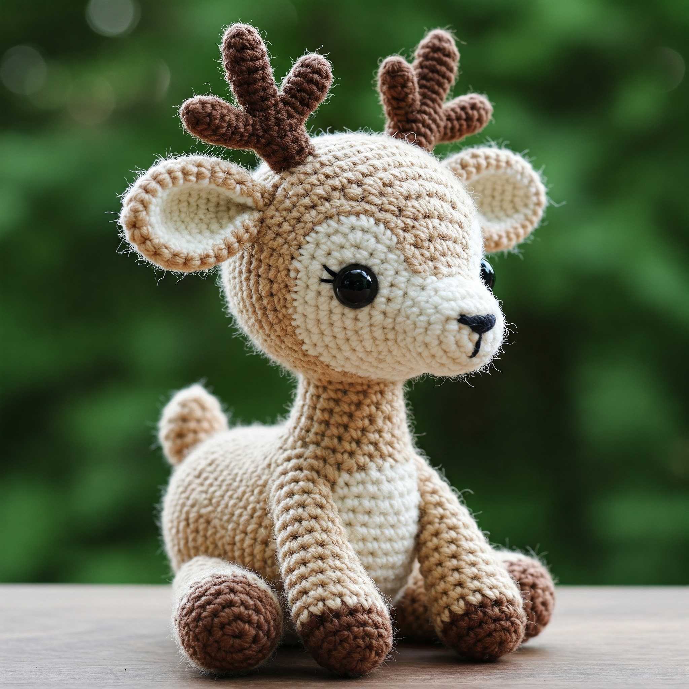
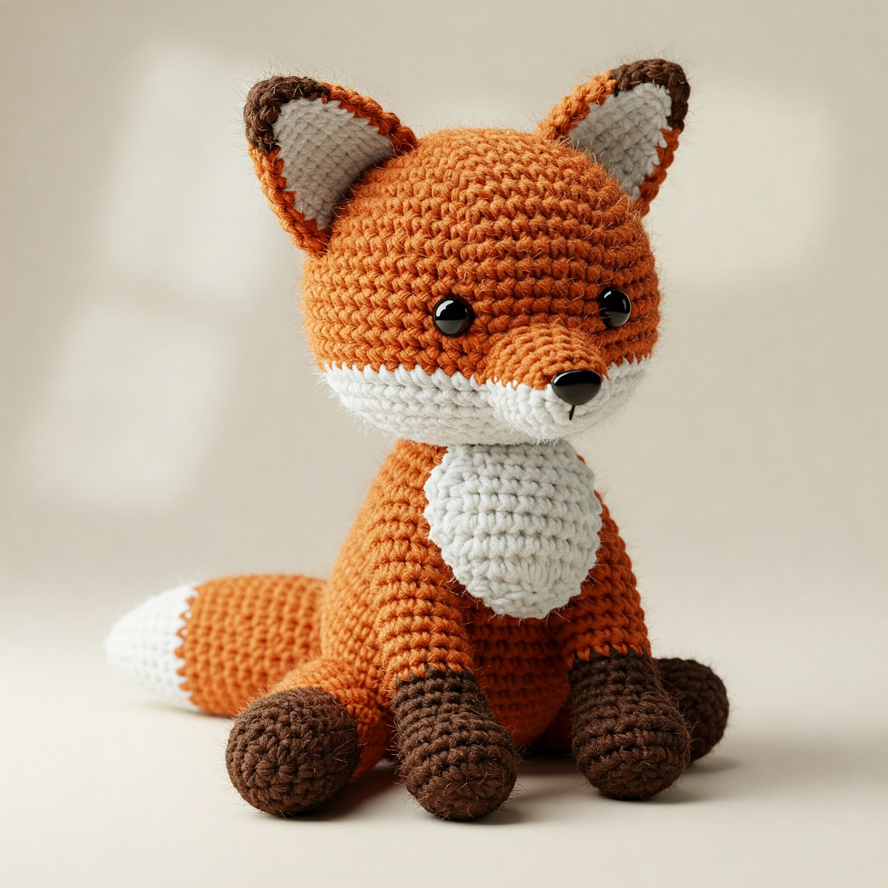
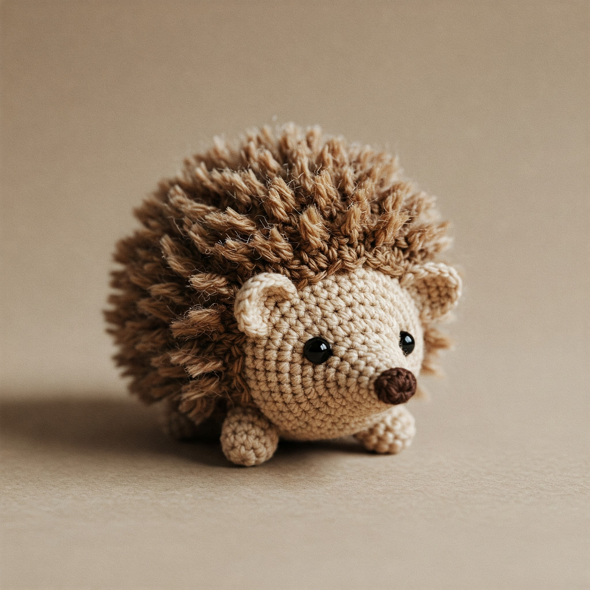

Hi all! I have been crocheting for about five years. I love crocheting because it lets my creativity flow into a beautiful creation thatI will be able to look back on and appreciate. My love for crochet has inspired me to create this website so that other artists who are interested in crochet will be able to access all the information they need all in one place! This website strives to take all of the knowledge and resources needed to begin a hobby ins crochet and put it all in one easy to navigate website!
My Favorite Crochet Projects
Meet this adorable crochet deer — a woodland-inspired softie that's as charming as it is cuddly. With gentle eyes, tiny antlers, and delicate spots on its back, this handmade deer captures the cozy essence of forest magic. Whether perched on a nursery shelf or tucked into a child’s arms, it's the perfect companion for snuggles and storytelling. Made using soft yarn and basic amigurumi techniques, this crochet deer is a delightful project for intermediate crocheters looking to bring a bit of the wild into their home.
This is a crochet Fox. It took me 3 months to crochet.
This is a crochet hedgehog. This is my favorite of them all.